See what we can sell, where the goods are, and when they can be pulled from China.
Selling? Go to Offer goods from Shalam Sales. Loading the report? Start at Load the new report. Something red or amber in the Shalam Tool? Go to Fix a red chip.
Draft. Saving into Shalam Sales may not be switched on yet. Until Saul confirms it, use the two download buttons.
Jump to: Load the new report · See what you can sell · See where the goods are · Check what can be pulled from China · Get the two files · Offer goods from Shalam Sales · Fix a red chip · Replace an old ATS report · Work through the Problems tab · Rules · Reference
Screenshots use made-up sample data. Click any picture to see it larger. This page is public, so a few file and list names in the pictures are changed or left out. The tool shows the real ones.
Save the weekly inventory report from the ERP into its folder on SharePoint. The tool calls it the ATS report. ATS means available to sell. Saul to confirm how to get it out of the ERP (see the yellow Draft note at the top).
Keep the date and time at the end of the file name, such as 11-5-2026 9-00 AM. The tool reads the file with the newest date.
Click Open Shalam Tool at the top of this guide, then Sign in with your Metro1 Microsoft account. The tool reads every file and list by itself. Wait until the chips stop saying loading or waiting.
Page already open? Click Refresh at the top right 1, shown in the next picture. It also reads everything again every 5 minutes.
Each chip at the top is one source, meaning a file or list the tool reads. Look at its dot:
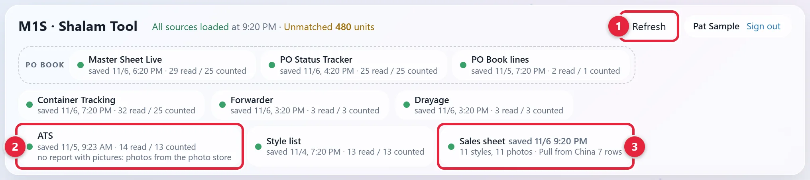
The ATS chip 2 should show the day you saved the report. The Sales sheet chip 3 is about the saved files. See Get the two files.
Hold your mouse on a chip to read more. Click a chip to open its file.
It says All sources loaded when every source was read. Unmatched beside it counts units on the Container Tracking Sheet with no Master Sheet Live line. Amber means there are some. They're listed on the Problems tab.
In the Shalam Tool, click the Available to sell tab. The tiles add up the styles shown below them.
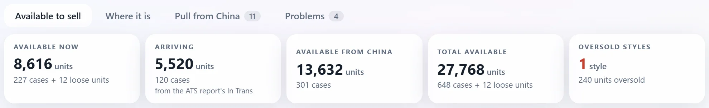
Click Arriving, Available from China or Total available to see every lot behind it. A lot is one batch of goods with one date.
Type a style, UPC or description in the search box 1. Or use All factories 2 or All categories 3.
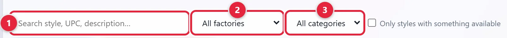
Tick Only styles with something available to hide the rest. Clear filters shows up when a filter is on. The same filters stay on when you move to Where it is and Pull from China. Click a column name to sort by it.
Available now 1 is what you can offer today. It's In warehouse minus Customer orders. Blank means none. Scroll the table right for more columns.
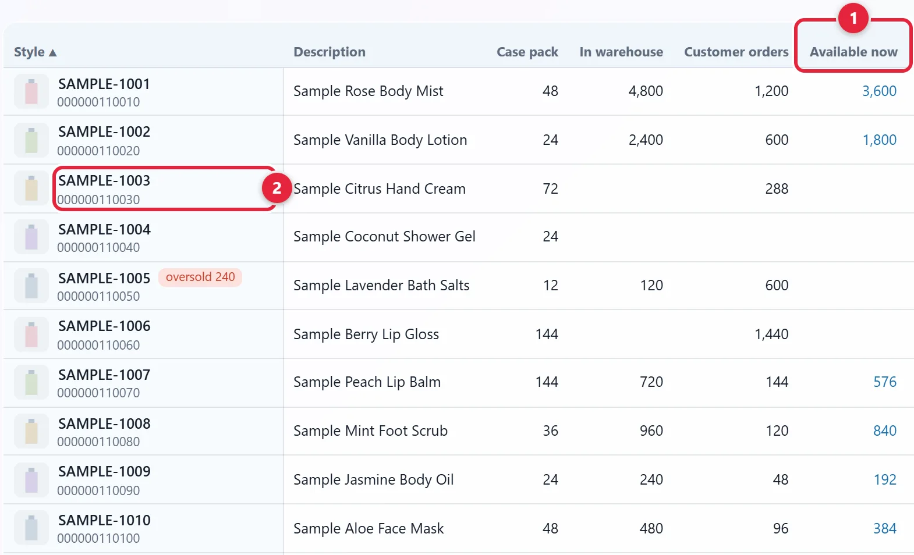
A red tag such as oversold 240 means customer orders are 240 units more than the stock and every lot coming.
Click any blue number, or a style name 2 in the picture above. A panel called What can be sold opens.
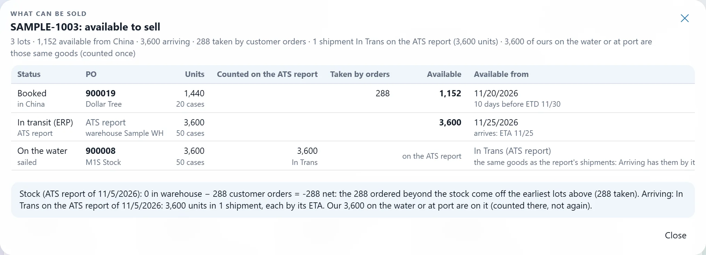
Each line is one lot. Taken by orders is what customer orders took. Available is what's left. Available from is the date a buyer can have it, with the reason under it. The box at the bottom explains the stock.
To close the panel, click Close or press Esc.
Each row is a style. After Description, Category and Factory come On hand and one column per stage, from No CRD to At port (CRD is the cargo ready date). This picture is scrolled right past the first three. The tiles add up the stages. On hand is what's in the warehouse, before customer orders.
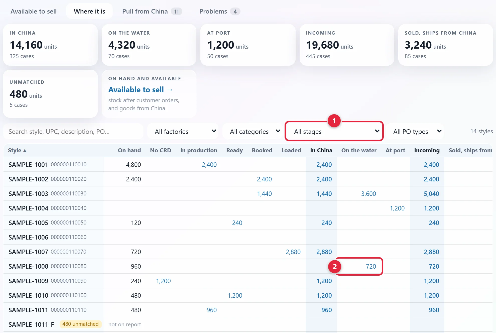
To see one stage, pick it in All stages 1. Stages on Where it is, under Reference at the bottom of this guide, lists them.
Click any blue number 2 in the picture above. A panel called Behind this number opens. Click a style name to see all its lines.
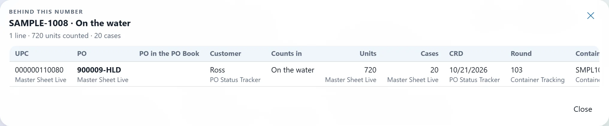
The small words under a value name the file it came from. Scroll right for Containers, ETD, ETA, Stage, Flags and From.
Shalam Sales has a tab with the same name. These steps are for the one in the Shalam Tool.
It has one line for each open PO line, meaning one that isn't marked shipped yet. The number on the tab counts them. Scroll the table right to reach the dates, as in this picture.
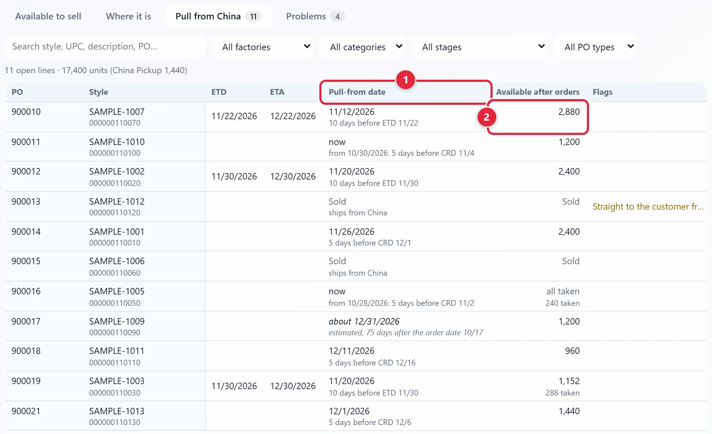
The numbers are in the picture above.
Scroll the table back to Units and click the number. The Behind this number panel opens for that line.
In the Shalam Tool, the buttons are in the filter bar on the Available to sell tab.
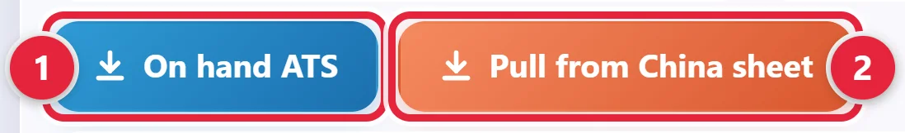
A message says when the file is ready, such as On hand ATS downloaded: 11 styles, 11 photos. Your browser saves it as On hand ATS.xlsx or Pull from China.xlsx.
Is a button pale, and nothing happens when you click it? No file can be made right now. Hold your mouse on it to read why.
Once saving is set up, the tool saves both files into Shalam Sales by itself after a clean load. A clean load means every source was read with no red, the report is 8 days old or less, and the Problems tab says Every unit adds up. It only does this while someone has the tool open. The chip 1 shows how it went.
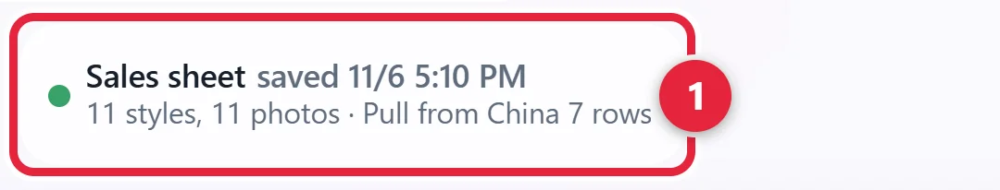
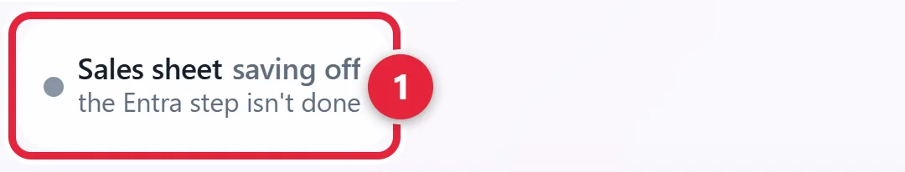
Shalam Sales is the page for salespeople. It shows the same two files, with their photos. It only reads, so nothing you do there changes the files. It needs saving to be switched on (see the yellow Draft note at the top). The pictures after step 1 show it with both files saved.
Click Open Shalam Sales at the top of this guide, then Sign in with your Metro1 Microsoft account. If it says On hand ATS can't be shown, read the line under it:
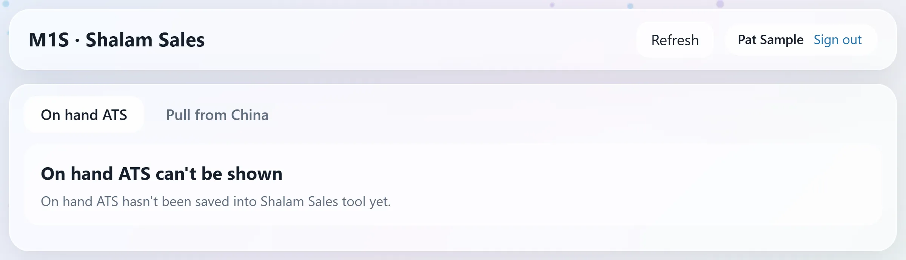
The line beside the page's name says when each file was saved. If it adds not saved since, the file is more than a day old and the numbers may be out of date. Tell Saul.
The page looks for new files every 5 minutes, or when you click Refresh.
On hand is ready now. In transit is on its way, and Available from says when. Total adds them up. Master/Inner is the pack size, such as 48/12. See the Glossary.
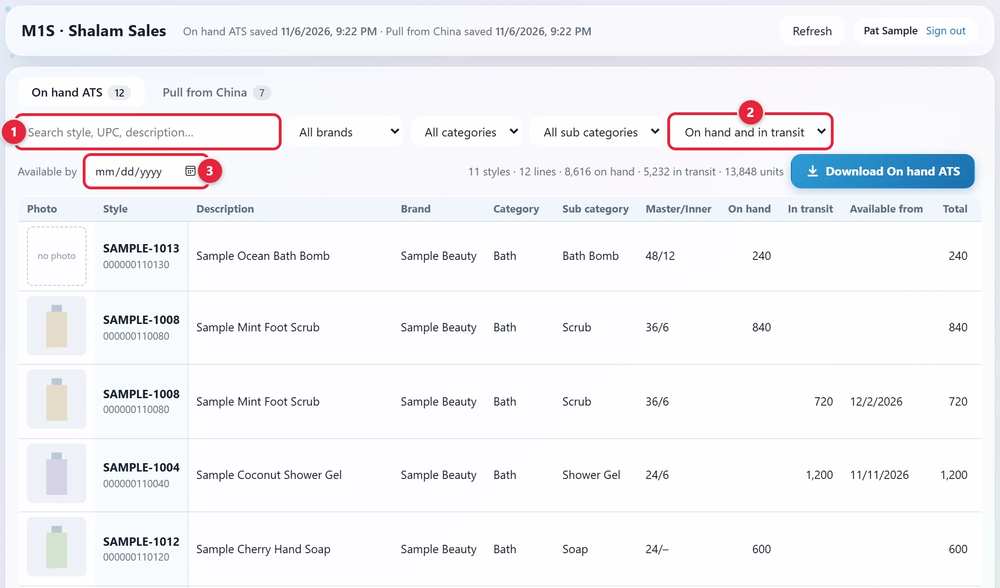
The numbers are in the picture above.
Click Pull from China 1. It lists goods still in China that aren't sold, with the date they can be pulled. about in front of a date means it's an estimate.
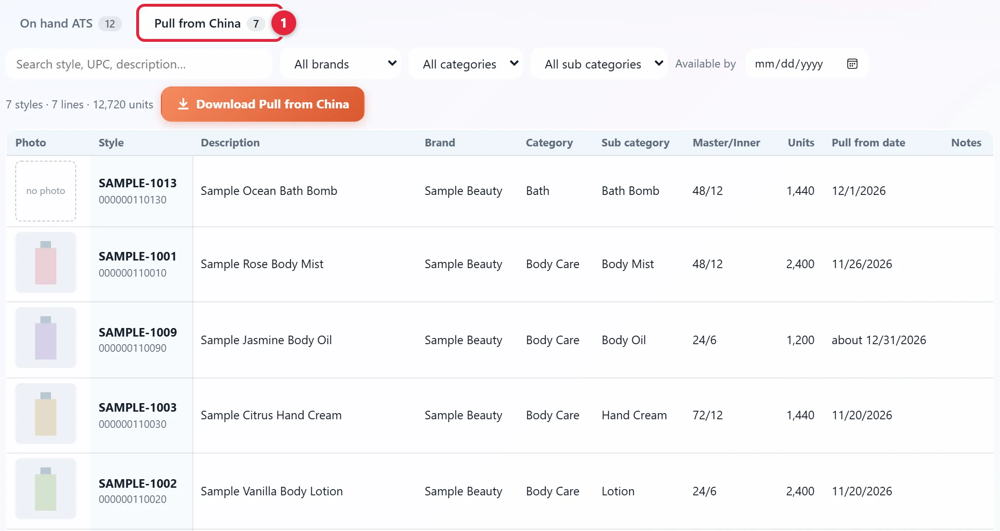
Click Download On hand ATS 2, or Download Pull from China on the other tab. The file holds exactly what's on the screen, with its photos. If a filter is on, the button says (filtered). Clear filters 1 takes the filters off.
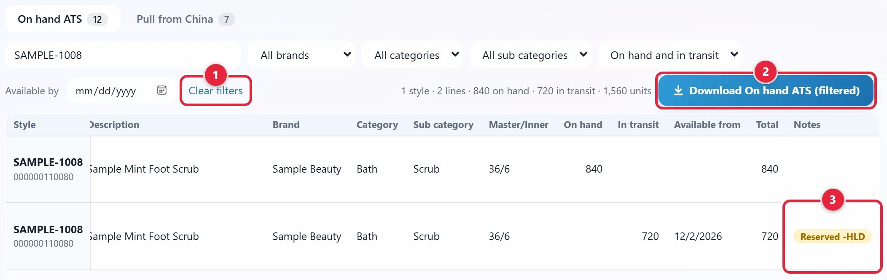
A style can have more than one line, one for each pack. Goods on a PO held for a customer get their own line, with Reserved and the PO's ending under Notes 3.
This fix and the next two are in the Shalam Tool. Go back to it first if you're on Shalam Sales. An amber ATS chip has its own steps: Replace an old ATS report.
A red chip means that source can't be used. Where the page says why depends on the chip.
PO Book group or Container Tracking 1: the banner under the chips says what's wrong. The stage numbers and Available to sell stop until it's fixed.
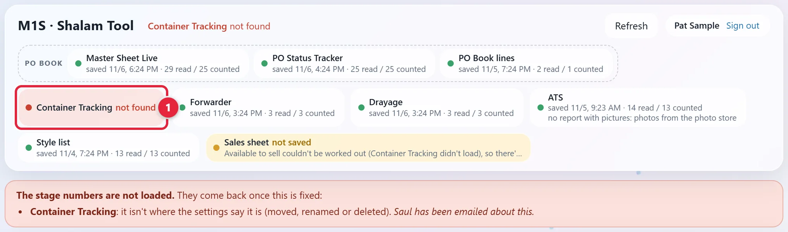
Forwarder or Drayage: an amber banner shows under the chips. The numbers still show, using the dates on the Container Tracking Sheet.
ATS 1: the banner 2 is under the tabs on Available to sell. The other tabs don't show it.
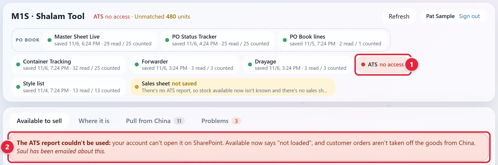
The style list chip (the one after ATS) or Sales sheet: there's no banner. Hold your mouse on the chip, or read Message 1 on the Problems tab. If you can't see it, scroll the Sources table right.
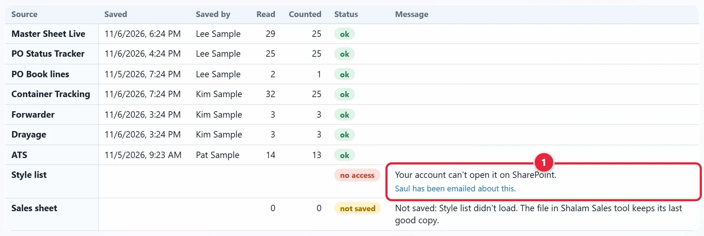
Open Words on a source's chip, and what to do under Reference. Find the word on the red chip and do what it says. For the Sales sheet chip, use Words on the Sales sheet chip.
It's at the top right. The chip should turn green.
In the Shalam Tool, the ATS chip 1 turns amber when the report is more than 8 days old. Once saving is set up, the Sales sheet chip 2 then says not saved.
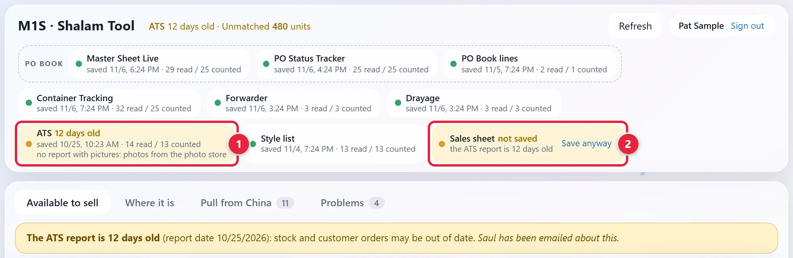
Do it the same way as in Load the new report.
It's at the top right. The ATS chip should turn green.
Click Problems in the Shalam Tool. The number on the tab counts the open issues. The top line should be green and say Every unit adds up. If it's red and says Units don't add up, that's a bug in the tool, not in the files. Tell Saul.
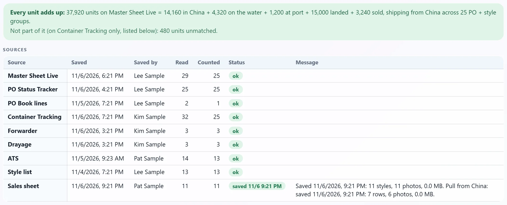
The Sources table shows each file, who saved it last, and its Status. Scroll right to read the Message for anything that isn't ok.
Each line says what's wrong and where. The Message often says what to correct. Logistics keeps the Container Tracking Sheet (see Fix what the tools flag). Production keeps the PO Status Tracker (see Clear an issue). Then click Refresh.
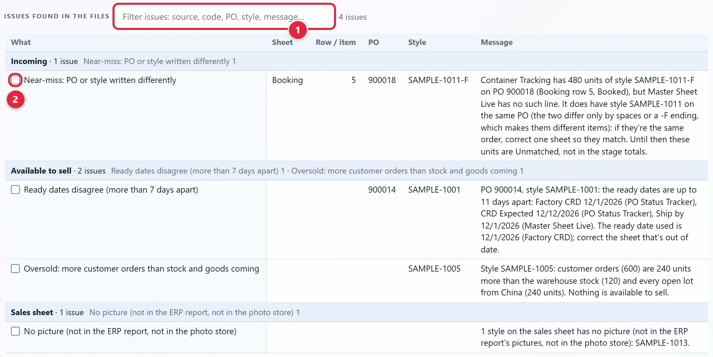
| Tab | What it shows |
|---|---|
| Available to sell | Stock that can be offered now, and goods coming, after customer orders |
| Where it is | Goods by stage |
| Pull from China | Each open PO line, with its pull date and what's left after orders |
| Problems | Items that need a person to look at them |
| Chip | What it is | If there's trouble |
|---|---|---|
| Master Sheet Live, PO Status Tracker, PO Book lines | The PO Book group, read together as the PO Book reads them | If one fails, the stage numbers stop |
| Container Tracking | The sheet with its Booking, Loaded, Open and Complete tabs | If it's red, the stage numbers stop |
| Forwarder | The newest forwarder's report in its folder | Amber from 2 business days old. Not used after 7 days: sailings and rolled vessels can't be seen |
| Drayage | The newest drayage report (trucking from the port) in its folder | Amber from 2 business days old. Not used after 7 days: pickups and deliveries can't be seen |
| ATS | The newest weekly report in its folder | Amber after 8 days. After 10 days, Saul is emailed too. With no usable report, customer orders aren't taken off the goods from China |
| Style list (the chip after ATS) | The list of styles: UPCs, descriptions, categories, brands. On screen this chip has the list's own name | If it's red, styles can't be matched to their UPCs |
| Sales sheet | The two files saved into Shalam Sales | See the next list |
A chip's second line shows when the file was saved, then how many rows were read and counted. Sources and their counts, at the bottom of the Available to sell and Where it is tabs, gives more detail.
| Word | What it means |
|---|---|
| waiting | The tool is still reading the sources |
| saved | The files were saved at that time |
| up to date | Nothing has changed since the files were last saved |
| checking… or saving… | Working on it. Cancel stops it, and the file there stays as it was |
| not saved | The words under it say why, such as your account can't save to it. Save anyway or Save now may show beside it. Red means saving failed, and Saul is emailed |
| saving off | Saving isn't set up. It may say the Entra step isn't done, which is a setup step for Saul. The download buttons still work |
Saul to confirm who makes these fixes (see the yellow Draft note at the top). If a file isn't yours to change, tell Saul.
| Word | What it means | What to do |
|---|---|---|
| waiting | Not read yet. Master Sheet Live also waits when the PO Status Tracker didn't load | Wait for the load to finish. If Master Sheet Live stays on it, fix the PO Status Tracker chip first |
| no report yet | No report in its folder | Save it there |
| 12 days old, 3 business days old | The file is getting old | Save a new one, or check the report is still arriving |
| date in the future | The date in the file name is after today | Check the date in the file name |
| not found | It was moved, renamed or deleted | Put it back, or tell Saul |
| no access | Your account can't open it | Ask Saul for access |
| link refused, can't read the location | SharePoint refused the file's link, or the tool has the wrong location for it | Tell Saul |
| can't read, can't read the list | SharePoint gave an error while reading it | Click Refresh. If it stays, tell Saul |
| PO Book rules changed | The PO Book was updated, and this tool still reads with the older rules | Tell Saul |
| missing column, missing tab | A column or tab is gone or renamed | Put it back with the name shown |
| empty | It has no rows | Open it and check its rows are still there |
| can't read the file | It won't open | Check it opens in Excel. Save it again if it's damaged |
| doesn't add up | The ATS report's rows don't match its Grand Total row | Check the rows, then save a fresh copy from the ERP into the folder |
| older file used | The newest file couldn't be read | Check the newest file |
| not used | The newest Forwarder or Drayage file is more than 7 days old | Check the report is still arriving |
| can't reach | The page couldn't reach SharePoint | Check your connection. The page tries again in a few minutes |
| not read (cancelled) | Loading was cancelled | Click Refresh |
| not set, or a bug banner | The location is blank, or a banner says it's a bug in the Shalam Tool | Tell Saul |
| Stopped: nothing is loaded, or Couldn't load the sources | A red banner about the sign-in or the connection | Click Sign in again if it shows. If this keeps happening, tell Saul |
Listed in the order of their names on screen. See the Careful note above about the two swapped pairs.
| Column | What it is |
|---|---|
| Style | The style with its UPC and photo, and any tag |
| Description | The style's description |
| Case pack | Units in a master carton. mixed when its goods come in different ones |
| In warehouse | In WH on the ATS report: physical stock |
| Customer orders | Total Customer Orders on the ATS report: sold, not shipped yet |
| Available now | In warehouse minus customer orders, when above zero. Orders that ship from China with goods sold there aren't taken off. Orders beyond the stock come off the earliest goods from China |
| Arriving | In Trans (in transit) on the ATS report, plus our goods on the water or at port that aren't on it yet, after customer orders. The line under the name says where it comes from |
| First arrival | The earliest ETA of what's arriving. ETA passed shows when that date has gone by |
| Available from China | Still in China (in production, ready, booked, loaded), after customer orders |
| First pull date | The first date goods in China can be pulled. now means that date has passed, and it says since when |
| Total available | Available now + arriving + from China |
| Sold (ships from China) | China Pickup POs and goods going straight to the customer. Never available to sell. Click its number for Behind this number |
Tags on a style: oversold, check orders, no ETA, check, not on ATS report, stock can't be read. Hold your mouse on a tag to read why it's there.
| Stage | What it means |
|---|---|
| No CRD | An open PO line with no CRD yet |
| In production | Its CRD is today or later |
| Ready | Its CRD has passed |
| Booked | On the Container Tracking Sheet's Booking tab, not sailed |
| Loaded | On the Container Tracking Sheet's Loaded tab, not sailed |
| In China | No CRD + In production + Ready + Booked + Loaded |
| On the water | Sailed, not arrived |
| At port | Arrived or picked up, not delivered |
| Incoming | In China + On the water + At port |
| Sold, ships from China | Already sold: China Pickup POs and goods going straight to the customer |
| Unmatched | On the Container Tracking Sheet with no Master Sheet Live line. Never in the stage numbers |
Cases incoming is Incoming in cases. Next ETA is the earliest ETA of goods on the water or at port.
Landed goods have no column. They come back through the ATS report as stock. To list them, use All stages. It has them under Not counted (side panel and Problems), with Short-shipped, Shipped, not on Container Tracking, Repeat of a shipped line, Container Tracking holds more, Planned, not booked yet, Ignored section and Older than the PO Status Tracker.
All PO types offers LA, China Pickup and Unknown.
On hand ATS.xlsx has the 13 columns below. Scroll the table right to see them all. Row 1 is the title and row 2 is the headers.
| Photo | Style | UPC | Description | Brand | Category | Sub category | Master/Inner | Available on hand (units) | Available in transit (units) | In transit available from | Total available (units) | Notes |
|---|---|---|---|---|---|---|---|---|---|---|---|---|
| (photo) | SAMPLE-1001 | 000000110010 | Sample Rose Body Mist | Sample Beauty | Body Care | Body Mist | 48/12 | 3,600 | 3,600 | |||
| (photo) | SAMPLE-1008 | 000000110080 | Sample Mint Foot Scrub | Sample Beauty | Bath | Scrub | 36/6 | 840 | 840 | |||
| (photo) | SAMPLE-1008 | 000000110080 | Sample Mint Foot Scrub | Sample Beauty | Bath | Scrub | 36/6 | 720 | 12/2/2026 | 720 | Reserved -HLD |
If a file name has no date, the tool uses the day the file was saved.
The ERP can also save the report with a picture for each style. The tool uses the pictures from the newest report that has them, even an older one. Other styles use the photos in the Quote Tracker's photo store. If the ATS chip says no report with pictures, the photos all come from that store. Saul to confirm how to turn pictures on, and how often.
| Column | What the tool does with it |
|---|---|
| Style | Needed. Rows of one style are added up |
| In WH | Needed. The stock. The rows must add up to the Grand Total row |
| Total Customer Orders | Needed. Taken off the stock |
| ATS from in WH | Used for Available on hand in the files |
| In Trans Qty and ETA Date | Arriving, one ETA for each quantity |
| Import PO Backlog Qty | The style's goods the ERP still has in China |
| Style Description, Category, Sub Category | Shown on the tool and in the files |